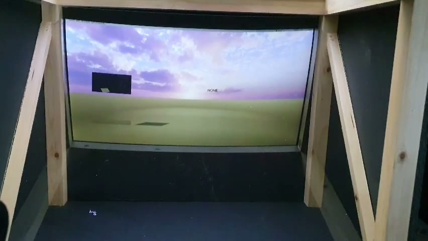
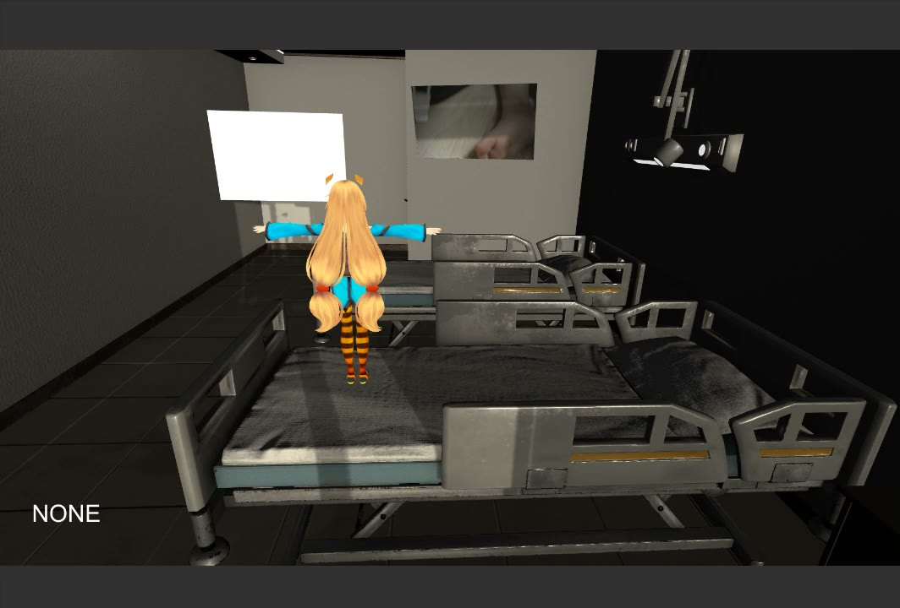
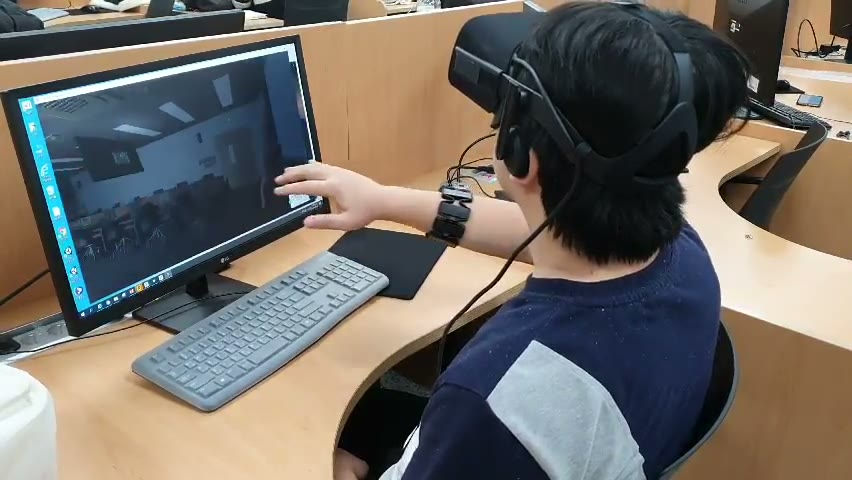
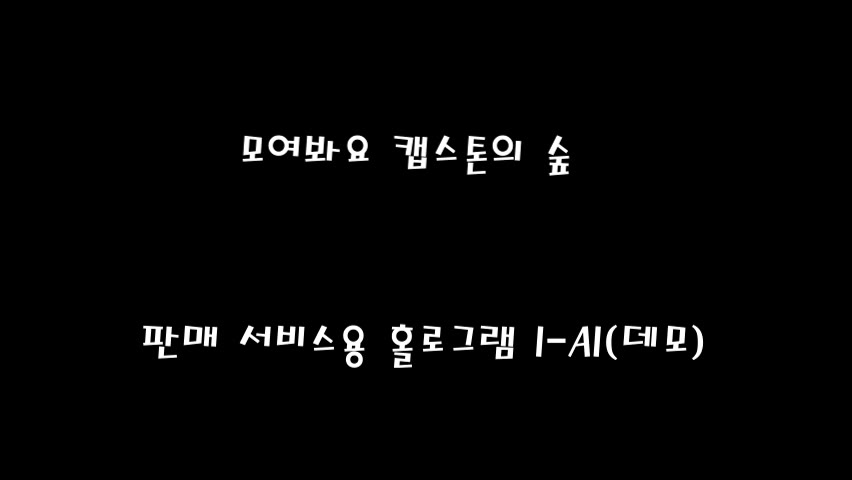
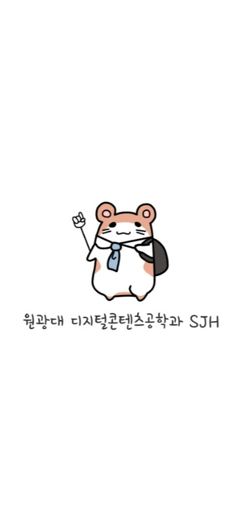

I-AI
판매 서비스용 홀로그램 AI 데모
음성, 영상, 객체 인식, 3D 캐릭터 표현을 결합해 매장 안내형 인터랙션을 실험한 캡스톤/해커톤 프로젝트입니다.
- Unity 씬과 캐릭터를 중심으로 서비스 안내 흐름 구성
- OpenCV/YOLO/STT 관련 자료를 결합한 실험형 구조
- 시연 영상 프레임을 보존해 결과 화면을 빠르게 확인 가능
과거 Unity 학습/과제/해커톤 프로젝트를 공개 가능한 화면과 구현 맥락 중심으로 재정리한 포트폴리오 쇼케이스입니다.

판매 서비스용 홀로그램 AI 데모
음성, 영상, 객체 인식, 3D 캐릭터 표현을 결합해 매장 안내형 인터랙션을 실험한 캡스톤/해커톤 프로젝트입니다.

실감형 혼합현실 데모
병실형 3D 공간, 캐릭터, 영상 입력/포즈 추정 관련 에셋을 묶어 체험형 혼합현실 흐름을 실험한 Unity 프로젝트입니다.
MYO 암밴드 연동 활쏘기 게임
MYO 암밴드 입력을 Unity 게임 조작에 연결했던 활쏘기 실험 프로젝트입니다. 현재는 장치/런타임 의존성 때문에 공개 캡처 대신 구조와 복원 상태를 중심으로 정리했습니다.

VR/센서 기반 상호작용 데모
VR 장비와 손/센서 입력을 활용한 체험형 Unity 데모입니다. 실제 착용/조작 시연 자료가 남아 있어 인터랙션 흐름을 보여주기 좋습니다.

모여봐요 캡스톤의 숲 데모
숲/맵 기반 공간과 음성·상호작용 아이디어를 결합한 캡스톤/K-해커톤 Unity 데모입니다.

Unity 게임콘텐츠 수업 데모
모바일 세로 화면 비율의 작은 Unity 게임콘텐츠 프로젝트입니다. 이동/상호작용 로직과 데모 영상을 중심으로 보존했습니다.